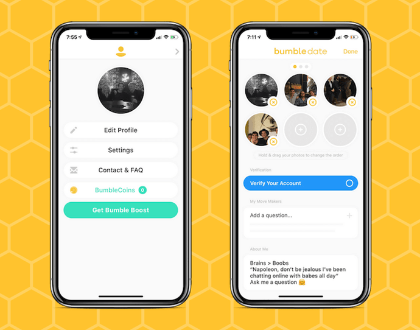
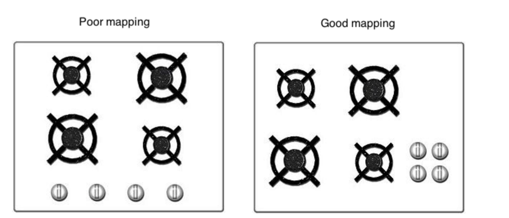
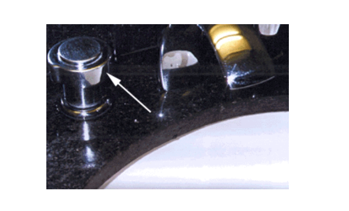

“I don’t know why, when I connect this printer to my laptop, there’s no sign of success. No one seems to have the same problem, though, since I haven’t heard of anyone complaining about it. This means I’ll probably look dumb if I ask.”
I don’t know if this hypothetical scenario resonates with you, but I found that some people, myself included, fall into this vicious loop sometimes. We seem to develop a self-critic mechanism whenever we fail to perform a seemingly simple task. People rarely blame object design, because they think such a simple task should not require further instruction, so the problem must, rather, lie on their own capability.
Imagine how many new household appliances and devices come into use every day, while we only have a split second to learn how to use some of them. The design of everyday things, in order to provide the best user experience, should follow a set of criteria. This principle is very well-analyzed in The Design of Everyday Things by Donald Norman. This book has me questioning every single object I use now.
1. Visibility
Visibility in designing an everyday object is when users have a clear image of what functionality possibly could be performed. Most of the time, users get confused when they find the result of their execution is in conflict with their original intention due to a lack of cues. A successful design provides sufficient cues that match the users’ expectation. Let’s look at the very simple example of the door, pictured:
I chose a seat facing the entrance, after ordering myself a cup of ginger tea, eyes glued to the door. To my surprise, 20 minutes have passed, and I’ve counted five people coming in and pushing the door when it’s supposed to be pulled. The design of this door might cause confusion, because people don’t know which side is to be pulled and which is to be pushed. A sign of “Push” and “Pull” was written in Vietnamese, but most people still fail to open the door, because lots of them don’t speak Vietnamese.
Instructions on how to perform certain executions should only be required when the object offers more than a single functionality. In this case, a simple act, such as opening the door, should not require users to spend extra time to read an instruction, not to even mention that the instruction is not inclusively designed, because it’s only applicable to a certain group of users (people who read Vietnamese, in this case). In Norman’s book, the author uses many examples of how to redesign the door. I totally recommend you check it out for additional details.
2. Providing feedback
The first time I used the office printer, I was unable to figure out how to connect it to my laptop. I was instructed to connect the cable into my computer, but nothing happened afterward. There was no sign from the printer to signal whether I had succeeded.
Feedback is the act of communicating the result of one’s action. Most of the times users fail miserably to work an object is due to a lack of feedback.
In order for a user to figure out quickly how an object works, the object design should provide feedback that is immediate and informative. If I have to wait for more than two minutes for the printer to show some signs of success or failure, I will definitely give up. A delay in giving feedback, even if it’s only an extra second, will discourage users from using it. However, if the feedback is immediate, without providing any further instruction in case the execution fails, then it won’t benefit the user either. If users are unable to create their profile on your website, for example, there should be a message explaining why.
An example of failing to provide feedback is from Bumble. When I want to delete my photo and upload a new one by hitting that “+” icon, nothing happens. For the first two times, I was waiting for around three seconds, and I thought it was a bug, so I just gave up. On my third attempt, I waited for, like, five seconds before the new photo was displayed.
You can try to test it yourself, if you have Bumble on your phone. The profile editing section will look something like this:
3. Natural mappings
Natural mapping is the relationship between an object’s property and its layout, based on cultural standards and physical analogies (e.g., the door should be opened from the right, red light means stop, etc.). Successful object design allows users to perform an action that corresponds to the user’s predefined concept.
An example of a stove’s layout, below, describes this concept very well:
4. Affordance
This is actually pretty close to the concept of natural mapping. While natural mapping is more about the correspondence between users’ predefined concept and an object’s layout, affordance determines how an object can be used. For example: a door to push, a printer to print papers, a button to push, a chair to sit on. Users should be able to know right away how to use an object just by looking at it.
For example, when I look at the water handle, below, should I push the button or turn it around? It’s not clear.
So that’s my recap of what I think stands out from the book and can be easily applied to not only everyday things, but also software development. You might have a different takeaway, and if you are interested in further details, definitely check out the book!